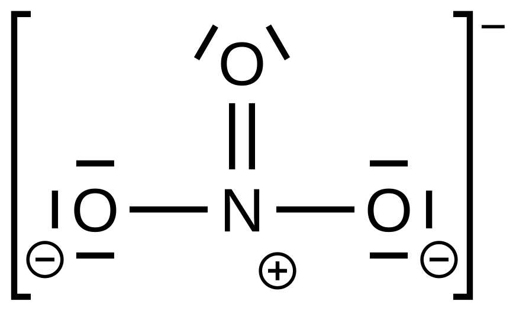
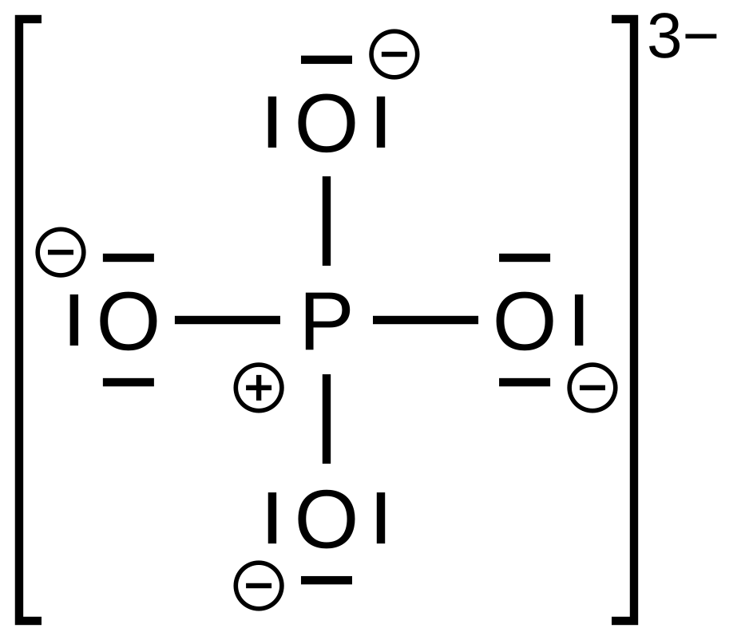
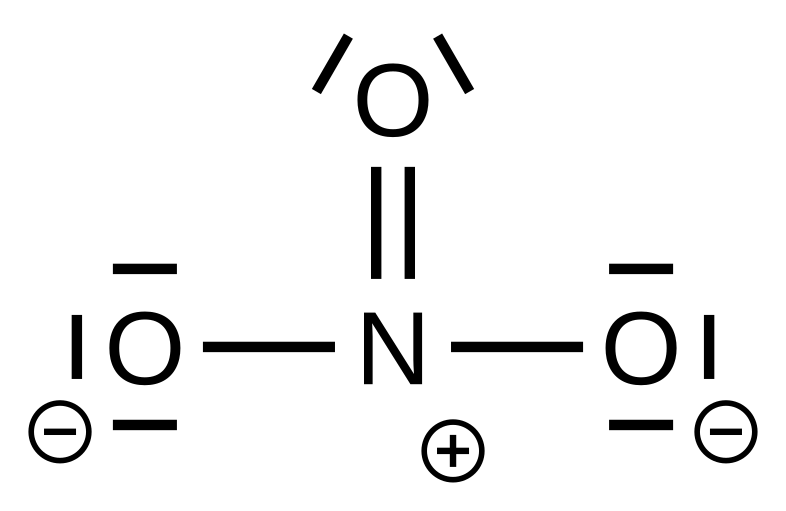
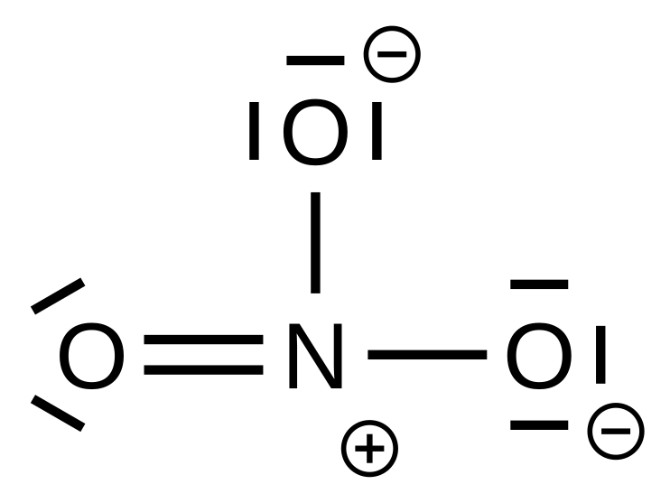
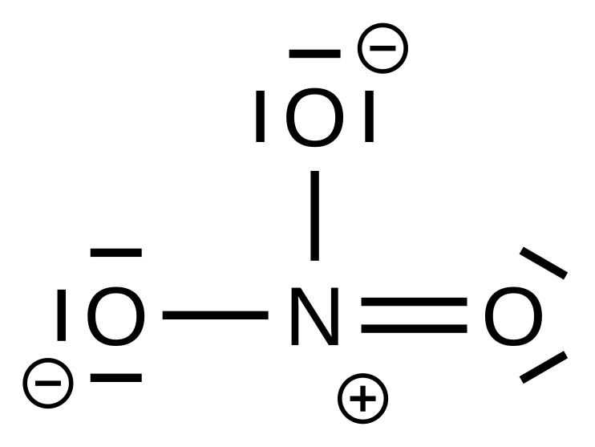

So nutzen Sie die Hilfen: Versuchen Sie es erst allein. Öffnen Sie dann Hilfe 1, danach Hilfe 2. Die Lösung dient zur Kontrolle – vergleichen Sie sie mit Ihrer eigenen Antwort und verbessern Sie diese.
Aufgabe 1: Formalladungen im Ammonium-Ion
Bestimmen Sie die Formalladungen und überprüfen Sie die Gesamtladung!
Hilfe 1
Formalladung = Valenzelektronen laut PSE − (2 · freie Elektronenpaare + Bindungsstriche). Schauen Sie in Abb. 1: Wie viele freie Paare und wie viele Striche hat das N-Atom, wie viele ein H-Atom?
C in die Mitte, drei O-Atome außen. Damit das C-Atom ein Oktett erreicht, braucht es eine Doppelbindung zu einem O-Atom. Die beiden einfach gebundenen O-Atome haben je drei freie Paare: 6 − (6 + 1) = −1.
Wie beim Carbonat-Ion: eine Doppelbindung N=O, zwei Einfachbindungen. Das N-Atom hat kein freies Paar: 5 − (0 + 4) = +1; die einfach gebundenen O-Atome je −1 → Summe −1.
Lösung

e) Nitrat-Ion NO₃⁻
f) Kohlenstoffmonooxid CO
Hilfe 1
C: 4, O: 6 → 10 Valenzelektronen = 5 Elektronenpaare. Keine Ladung – es ist ein Molekül!
Hilfe 2
Nur mit einer Dreifachbindung C≡O und je einem freien Paar erreichen beide Atome das Oktett. C: 4 − (2 + 3) = −1, O: 6 − (2 + 3) = +1 → Summe 0.
Wie beim Sulfat-Ion: vier Einfachbindungen, jedes O-Atom −1. P: 5 − (0 + 4) = +1. Summe: +1 − 4 = −3.
Lösung

h) ★ Phosphat-Ion PO₄³⁻
Aufgabe 3: Mesomere Grenzformeln des Nitrat-Ions
Zeichnen Sie alle mesomeren Grenzformeln des Nitrat-Ions!
Hilfe 1
Gehen Sie von Ihrer Strukturformel aus Aufgabe 2e aus. Wie viele O-Atome könnten die Doppelbindung tragen?
Hilfe 2
Zeichnen Sie die Formel dreimal – jedes Mal trägt ein anderes O-Atom die Doppelbindung. Die beiden anderen O-Atome bekommen jeweils ⊖, das N-Atom immer ⊕. Verbinden Sie die Formeln mit ↔.
Lösung (erst nach eigenem Versuch öffnen!)

↔

↔

Aufgabe 4 (★ Wahl): Mesomerie im Schwefeltrioxid-Molekül
Zeichnen Sie die mesomeren Grenzformeln mit allen Formalladungen (Oktettregel)!
Hilfe 1
S: 6, O: 3 · 6 → 24 Valenzelektronen = 12 Elektronenpaare. S in die Mitte. Das Molekül ist ungeladen – die Summe der Formalladungen muss 0 sein.
Hilfe 2
Mit einer Doppelbindung und zwei Einfachbindungen hat das S-Atom ein Oktett. S: 6 − (0 + 4) = +2, die einfach gebundenen O-Atome je −1. Wie beim Nitrat-Ion gibt es drei Grenzformeln.